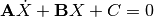

Core classes for the simulation
This module provides the core simulation functionalities.
See Gay et al. J. Cell Biol., 2012 http://dx.doi.org/10.1083/jcb.201107124 The original framework was adapted from: Civelekoglu-Scholey et al. Biophys. J. 90(11), 2006 http://dx.doi.org/10.1529/biophysj.105.078691
An instance of the Metaphase class is a wrapper around the whole simulation.
Typical usage
>>> from kt_simul.simul_spindle import Metaphase
>>> m = Metaphase()
>>> m.simul()
>>> m.show_trajs()
>>> m.write_results('examples/docstring_results.xml',
'examples/docstring_data.npy')
From an already runned simulation
>>> from kt_simul.simul_spindle import Metaphase
>>> m1 = get_fromfile('examples/docstring_results.xml')
>>> m1.show_one(1) #This shows the trajactory of the chromosome 1
>>> m2 = Metaphase(m1.paramtree, m1.measuretree) #A new simulation
>>> m2.simul(ablat = 600) #this time with spindle ablation
Metaphase instanciation method
| Parameters: |
|
|---|
Passes all the evaluations in eval_simul.py results are stored in the self.observations dictionnary
This module defines all the objects considered in the simulation, It uses cython used for the computer intensive bits
This class wraps all the simulation internals.
KinetoDynamics instenciation method
| Parameters: |
|
|---|
| Returns: | the matrix containing the linear terms of the equation set  |
|---|
| Returns: | the matrix containing the linear terms of the equation set |
|---|
| Returns: | the matrix containing the linear terms of the equation set |
|---|
Elementary step :
A spindle pole object.
side: 1 or -1 1 corresponds to the right SPB, i.e. to the Spb with x > 0. The left SPB, with side = -1 corresponds to the daggered variable)
side = 1 : left side = -1 : right L0 : spindle length
The chromosome, containing two centromeres (‘A’ and ‘B’)
spindle: a Spindle instance
x.__init__(...) initializes x; see help(type(x)) for signature
returns the number of correctly plugged MTs
Returns the number of erroneously plugged MTs
The centromere is where the plugsites are bound to the chromosome and where the cohesin spring restoring force, as well as the friction coefficient, are applied. This is a subclass of Organite
x.__init__(...) initializes x; see help(type(x)) for signature
Calculate time of arrivals
Returns True if at least one plugsite is attached to at least one SPB
An attachment site object.
centromere: a Centromere instance
x.__init__(...) initializes x; see help(type(x)) for signature
Returns True if the plugsite is plugged correctly, i.e. doesn’t contribute to an attachment error
Module dealing with simulation parameters
This functions changes the parameters so that the dynamical characteristics complies with the measures [1].
paramtree : xml_handler.ParamTree instance measuretree : xml_handler.MeasureTree
paramtree is modified in place
| [1] | G. Gay, T.Courthéoux, C. Reyes, S. Tournier, Y. Gachet. J. Cell Biol 2012 http://dx.doi.org/10.1083/jcb.201107124 |
This class defines the container for the simulation parameters. It wraps an ElementTree instance whose elements contains the name, value (as a string), description and unit of each parameter and a dictionnary that is used during the simulation.
The value attribute of the tree is not modified by adimentionalization, whereas the value in the dictionnary is changed.
This function scales everything taking dt as unit time, Vk as unit speed, and Fk as unit force. It relies on a correct definition of the units of the elements of the param tree, thus a correct spelling in the xml file, so please beware
Note that the “value” attribute of the ElementTree instance are NOT modified. Also, applying this function on an already adimentionalized dictionnary won”t change any thing